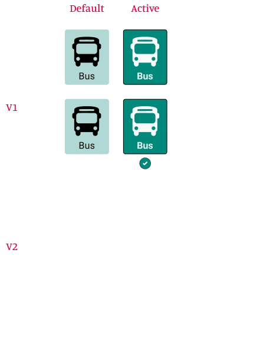

01Clear Selection States
Early iterations relied primarily on color to indicate the selected transport mode. Following WCAG principles, an additional checkmark was introduced to provide a secondary visual cue and ensure that selection states remained understandable for users with color vision deficiencies.
